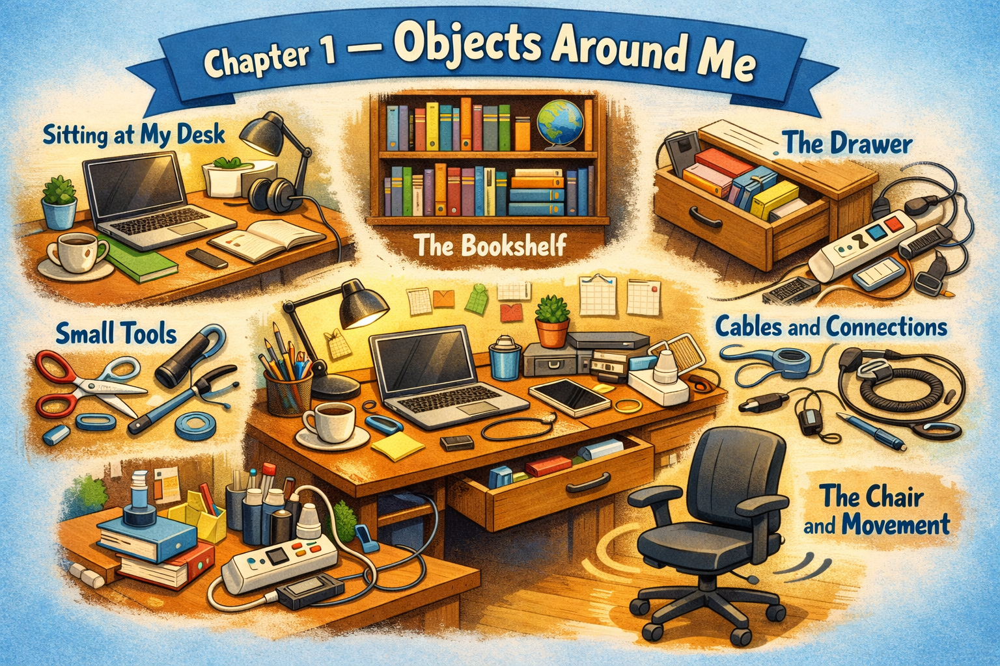

Chapter 1 — Objects Around Me

Micro Scene 1 — Sitting at My Desk
1️⃣ Scene Text
I am sitting at my desk with two screens in front of me.
My MacBook Pro is open, slightly tilted toward the external monitor.
The second screen stands upright on a metal base, positioned a little higher than the laptop.
A few cables run across the surface of the desk, loosely arranged but not completely tangled.
There are small objects scattered around — a notebook, a pen, and a pair of earphones.
The desk feels a bit crowded, especially near the center.
My phone lies face down beside the laptop.
The window is on my left, letting in a soft and indirect light.
Sometimes the reflection on the screen makes the text harder to read.
Under the desk, a power strip is attached to the wall.
Several plugs are connected to it, forming a small network of wires.
Nothing is perfectly organized, but everything is within reach.
2️⃣ Core Verb Pool
sit
tilt
stand
position
run
scatter
lie
reflect
attach
connect
form
organize
reach
3️⃣ Structure Patterns
There are + plural noun
X is positioned + adverbial phrase
X runs across Y
X is attached to Y
X is connected to Y
X feels + adjective
Nothing is + adjective
Everything is within reach
4️⃣ Replace & Extend
Replace the device:
My MacBook Pro is open.
→ My desktop computer is running.
→ My tablet is placed next to the monitor.
Replace the condition:
The desk feels crowded.
→ The desk feels empty.
→ The desk feels surprisingly clean.
Replace the spatial relation:
The window is on my left.
→ The window is behind me.
→ The window is directly in front of me.
5️⃣ Spoken Mode
I’m sitting at my desk with two screens in front of me.
My MacBook’s slightly tilted toward the monitor.
There are cables all over the place.
The desk’s a bit messy, but I can still find what I need.
Everything’s within reach.
🔎 Structural Notes
• “There are” introduces existence, not ownership.
• “runs across” describes spatial movement, not action in time.
• “within reach” expresses spatial accessibility (状态表达).
Micro Scene 2 — The Bookshelf
1️⃣ Scene Text
Behind me, there is a tall bookshelf against the wall.
Most of the shelves are filled with technical books and old notebooks.
Some books are stacked vertically, while others are piled horizontally.
A few folders are leaning slightly to one side.
The edges of certain books are worn from frequent use.
There is a thin layer of dust on the top shelf.
One shelf holds random items that do not seem to belong together — a charger, a screwdriver, and a small box.
The lower section is less organized, with papers partially sticking out from between the books.
When I reach for a book, I sometimes have to adjust the others to make space.
The structure of the shelf feels solid, but the arrangement is inconsistent.
It is functional, but not perfectly ordered.
2️⃣ Core Verb Pool
fill
stack
pile
lean
wear
hold
stick out
reach
adjust
organize
belong
arrange
3️⃣ Structure Patterns
There is / There are
X is filled with Y
X is stacked + adverb
X is leaning + direction
X sticks out from Y
X feels + adjective
X does not seem to + verb
4️⃣ Replace & Extend
Replace the content:
The shelves are filled with technical books.
→ The shelves are filled with novels.
→ The shelves are filled with documents.
Replace the arrangement:
Some books are stacked vertically.
→ Some books are arranged by size.
→ Some books are grouped by topic.
Replace the condition:
The arrangement is inconsistent.
→ The arrangement is systematic.
→ The arrangement is temporary.
5️⃣ Spoken Mode
There’s a bookshelf behind me, packed with books and notebooks.
Some of them are stacked neatly, others are just piled up.
A few things don’t really belong there.
It works, but it’s not exactly organized.
🔎 Structural Notes
• “is filled with” expresses content relationship.
• “does not seem to” softens judgment (uncertainty expression).
• “sticks out” is a spatial phrasal verb (动作 + 方向).
Micro Scene 3 — The Drawer
1️⃣ Scene Text
On the right side of the desk, there is a narrow drawer.
It slides out smoothly, though sometimes it gets stuck halfway.
Inside, various small items are loosely arranged.
There are cables folded unevenly, along with a few unused adapters.
A small screwdriver lies near the back corner.
Several batteries are stored in a plastic case.
Some old receipts are pushed to one side.
The space inside the drawer is limited, so objects often overlap.
When I look for something specific, I usually have to move other items aside.
Nothing inside is carefully categorized, but I roughly know where things are.
The drawer closes with a soft click.
2️⃣ Core Verb Pool
slide
get stuck
arrange
fold
lie
store
push
overlap
look for
move aside
categorize
close
3️⃣ Structure Patterns
X slides + adverb
X gets stuck + position
There are + plural noun
X is stored in Y
X is pushed to one side
X overlaps with Y
I have to + verb
X closes with + sound
4️⃣ Replace & Extend
Replace the content:
There are cables folded unevenly.
→ There are documents stacked loosely.
→ There are tools placed randomly.
Replace the condition:
The drawer gets stuck halfway.
→ The drawer opens effortlessly.
→ The drawer feels slightly unstable.
Replace the action:
I move other items aside.
→ I reorganize the items.
→ I remove everything and start over.
5️⃣ Spoken Mode
There’s a drawer on the right side of my desk.
It sometimes gets stuck when I pull it out.
It’s kind of messy inside.
I usually have to move things around to find what I need.
It closes with a soft click.
🔎 Structural Notes
• “get + adjective/position” often describes an unintended state.
• “have to + verb” expresses necessity (external constraint).
• “move aside” implies temporary displacement, not removal.
Micro Scene 4 — Cables and Connections
1️⃣ Scene Text
Behind the monitors, several cables run downward toward the power strip.
Some of them are tightly connected, while others feel slightly loose.
One cable links the MacBook Pro to the external display.
Another connects the monitor to the power source.
The wires cross each other in the middle, forming a small cluster.
A few cables hang freely behind the desk, almost touching the wall.
When I adjust the position of the laptop, the tension in the cable changes.
Sometimes I have to reconnect a plug to restore the signal.
The arrangement is functional, but not carefully managed.
The connections hold everything together, even though they remain mostly invisible.
2️⃣ Core Verb Pool
run
connect
link
cross
form
hang
adjust
change
reconnect
restore
hold
manage
3️⃣ Structure Patterns
X runs toward Y
X is connected to Y
X links A to B
X crosses Y
X forms + noun
When X changes, Y changes
I have to + verb
X remains + adjective
4️⃣ Replace & Extend
Replace the device:
One cable links the MacBook Pro to the monitor.
→ One cable links the router to the modem.
→ One cable links the keyboard to the laptop.
Replace the condition:
Some cables feel slightly loose.
→ Some cables are firmly secured.
→ Some cables appear worn out.
Replace the action:
I reconnect the plug.
→ I tighten the connection.
→ I unplug it and plug it back in.
5️⃣ Spoken Mode
There are cables running behind the monitors.
Some of them are a bit loose.
They’re all connected to the power strip.
If something stops working, I usually reconnect the plug.
It’s messy, but it works.
🔎 Structural Notes
• “link A to B” expresses relational structure (结构表达).
• “remain + adjective” indicates stable state.
• “hold everything together” is metaphorical but still structural.
Micro Scene 5 — Small Tools and Loose Items
1️⃣ Scene Text
Scattered across the desk are several small tools and random items.
A USB drive rests near the base of the monitor.
A pen lies diagonally across an open notebook.
There is a small cleaning cloth folded near the edge of the desk.
An extra charger is placed beside the laptop, just in case.
A pair of earphones is loosely coiled, with one side slightly tangled.
Some paper clips are grouped together in a small container.
A sticky note is attached to the side of the monitor.
It contains a short reminder written in hurried handwriting.
These small items do not seem important, but I use them almost every day.
They remain within reach, even if they are not perfectly arranged.
2️⃣ Core Verb Pool
scatter
rest
lie
fold
place
coil
tangle
group
attach
contain
use
arrange
remain
3️⃣ Structure Patterns
X rests near Y
X lies across Y
X is placed beside Y
X is folded + position
X is loosely + past participle
X is attached to Y
X contains + noun
X does not seem + adjective
4️⃣ Replace & Extend
Replace the object:
A USB drive rests near the monitor.
→ A hard drive sits under the desk.
→ A tablet lies next to the keyboard.
Replace the condition:
The earphones are slightly tangled.
→ The cables are completely tangled.
→ The charger is neatly wrapped.
Replace the function:
The sticky note contains a reminder.
→ The sticky note contains a phone number.
→ The sticky note contains a short task list.
5️⃣ Spoken Mode
There are a bunch of small things scattered on my desk.
My USB drive’s near the monitor.
The earphones are kind of tangled.
There’s a sticky note on the side with a quick reminder.
They’re small, but I use them all the time.
🔎 Structural Notes
• “are scattered” emphasizes distributed position, not action.
• “just in case” expresses precaution.
• “remain within reach” signals accessibility (状态表达).
Micro Scene 6 — The Chair and Movement
1️⃣ Scene Text
The chair supports my weight as I sit in front of the desk.
Its height can be adjusted with a lever underneath the seat.
The backrest tilts slightly when I lean back.
Sometimes the wheels roll a short distance when I shift my position.
The armrests are positioned just below the level of the desk.
If I sit too long, I begin to feel tension in my shoulders.
When I adjust the height, my posture changes immediately.
The movement is subtle but noticeable.
The chair allows flexibility, even though it stays in one place most of the time.
Its structure feels stable, yet responsive to small changes in pressure.
Without it, the entire setup would feel incomplete.
2️⃣ Core Verb Pool
support
adjust
tilt
lean
roll
shift
position
begin
change
allow
stay
respond
3️⃣ Structure Patterns
X supports + noun
X can be + past participle
X tilts when + clause
When X changes, Y changes
X allows + noun
X stays + adverbial phrase
X feels + adjective
4️⃣ Replace & Extend
Replace the function:
The chair supports my weight.
→ The stand supports the monitor.
→ The shelf supports the books.
Replace the movement:
The wheels roll slightly.
→ The monitor shifts slightly.
→ The laptop slides forward.
Replace the condition:
My posture changes immediately.
→ The screen angle changes slightly.
→ The lighting condition changes gradually.
5️⃣ Spoken Mode
The chair supports me while I work.
I can adjust the height if I need to.
It tilts a bit when I lean back.
If I sit too long, I feel it in my shoulders.
It stays in place, but it’s flexible enough.
🔎 Structural Notes
• “can be + past participle” expresses passive capability.
• “when + clause” introduces conditional sequence.
• “respond to + noun” expresses sensitivity to change.
🔸 Integration Scene — My Workspace as a System
Two screens stand in front of me, connected by a network of cables.
My MacBook Pro sits slightly angled toward the external monitor.
The desk holds scattered tools and small devices.
A drawer on the right contains cables, adapters, and batteries.
Behind me, the bookshelf supports years of accumulated notes and manuals.
Nothing in the room is perfectly aligned, yet everything serves a function.
The chair adjusts to my posture, allowing subtle movement.
The cables link each device to a power source.
Small objects remain within reach, even when they are not carefully arranged.
The surface of the desk reflects light from the window.
The structure of the setup is simple, but interconnected.
Each component depends on another part to function properly.
If one connection fails, the entire system feels unstable.
When everything works together, the space becomes efficient.
This workspace is not minimal, but it is functional.
It reflects both structure and imperfection.
Integration Verb Focus
connect
support
adjust
arrange
link
depend
reflect
function
serve
Integration Reflection
What elements in your workspace define its structure?
What part feels unnecessary?
What part feels essential?